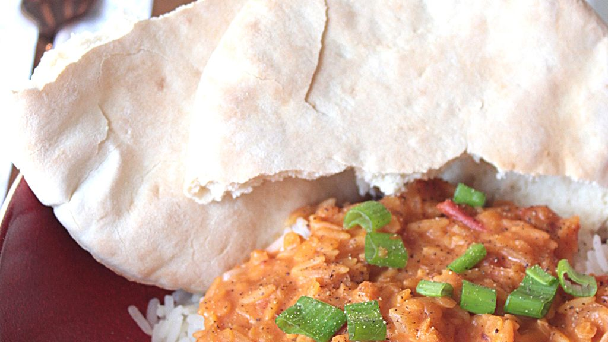

Dahl
 2 servings
2 servings 30 mins
30 mins Source
Source Veggie
Veggie Salty
Salty

3 tspgaram masala1 clovegarlic1yellow onion
Slice the onion and garlic. Brown them with the Garam Massala spices in olive oil in the bottom of a saucepan until browned. Browning the spices at the same time as the onion will allow them to release all their flavors.
150 gcoral lentils200 mLcrushed tomatoes100 mLvegetable broth250 mLcoconut milk
Add the lentils, crushed tomatoes, coconut milk and stock. Mix and simmer, covered, for about 20 minutes. Serve piping hot!